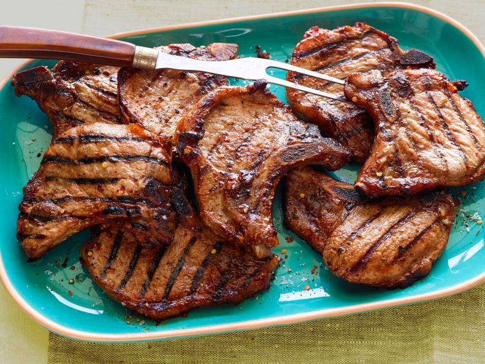
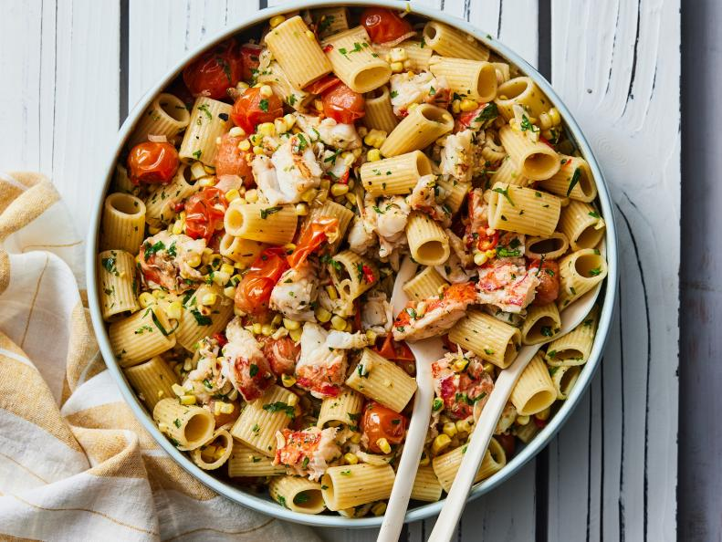
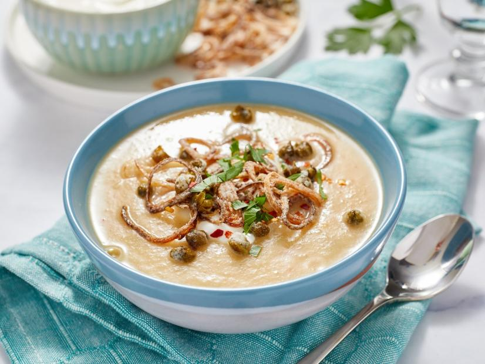
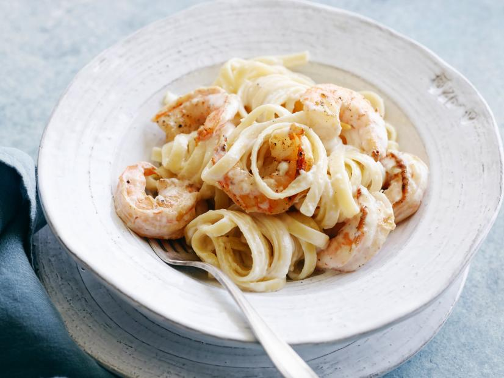
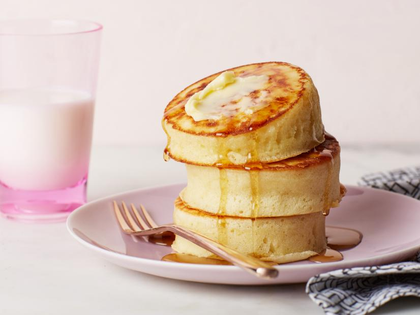
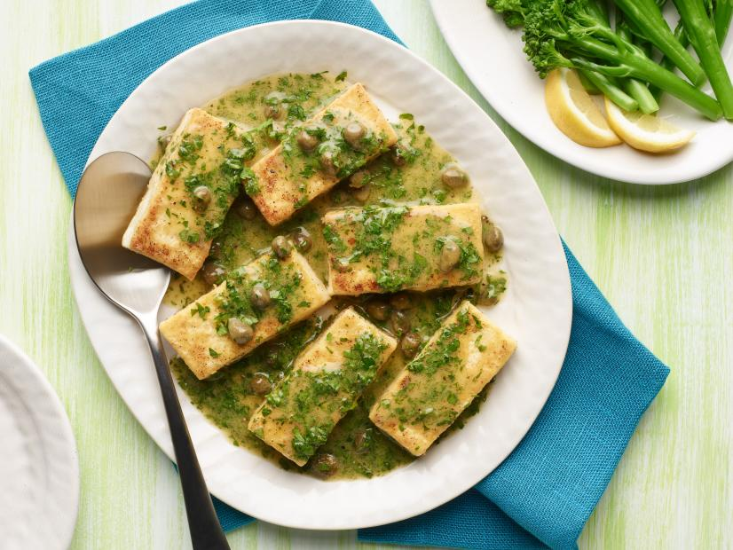
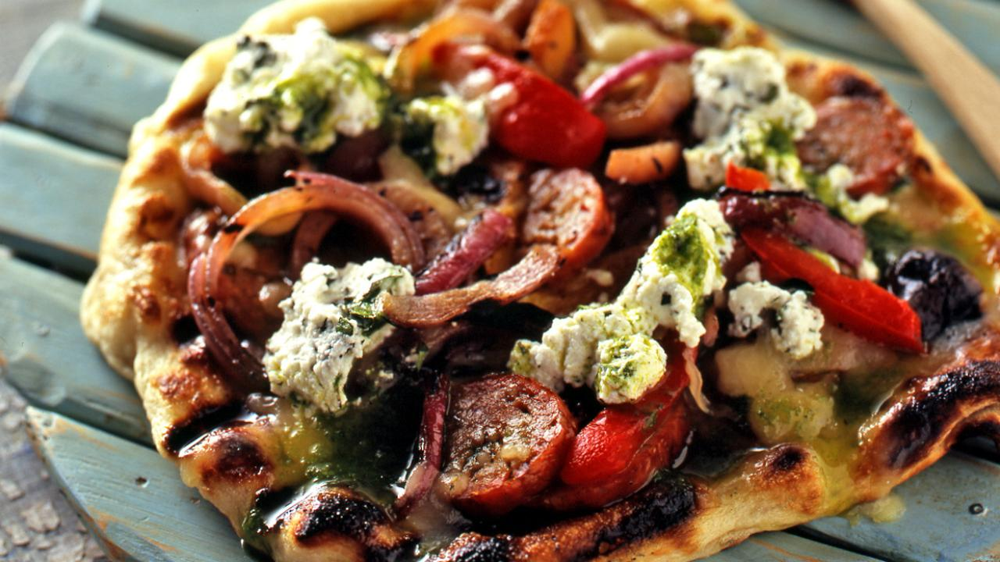
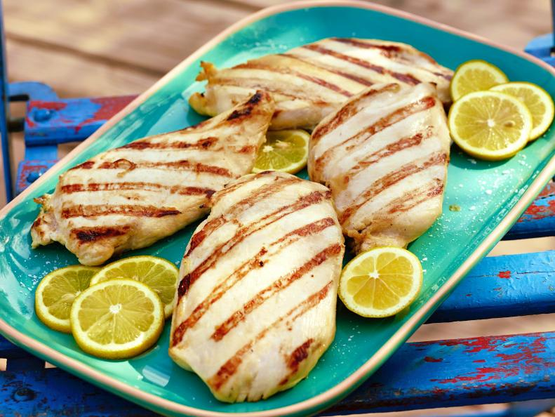
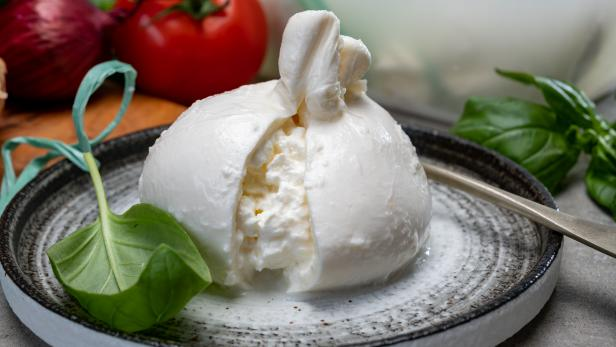
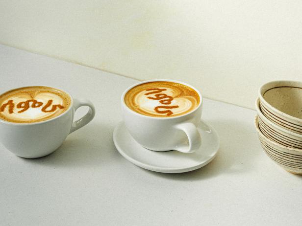

Welcome to the table, make your choice of food with ingredients

Easy Grilled Pork Chops
1/4 cup honey, 2 tablespoons vegetable oil, 1 tablespoon apple cider vinegar, 1 teaspoon ground cumin ,1/2 teaspoon
red pepper flakes ,Eight 1/2-inch bone-in pork chops (about 3 ounces each) ,Salt and freshly ground black pepper
red pepper flakes ,Eight 1/2-inch bone-in pork chops (about 3 ounces each) ,Salt and freshly ground black pepper

grilled-lobster
Kosher salt and freshly ground black pepper ,12 ounces mezze rigatoni ,1 lemon, zested, then cut in half ,Pinch red pepper flakes ,3/4 cup olive oil ,Four 8-ounce lobster tails, thawed if frozen ,3 ears corn, husked ,3 cloves garlic, thinly sliced ,1 Fresno chile, thinly sliced ,1 shallot, thinly sliced ,Two 9-ounce containers cherry tomatoes.

Cauliflower Soup
2 tablespoons unsalted butter,2 shallots, finely diced, Kosher salt and freshly ground black pepper, 1 medium head cauliflower, 3 cloves garlic, thinly sliced, One 18.25-ounce (540-milliliter) can white kidney beans, 6 cups (1 1/2 liters) vegetable broth, Pinch freshly grated nutmeg, 1 lemon, juiced, Crushed red pepper flakes, optional, to taste

Shrimp Fettuccine Alfredo
Kosher salt, 12 ounces fettuccine,Olive oil, for tossing, 3/4 pound large shrimp (about 16), peeled and deveined, tails removed,Freshly ground black pepper,1 stick (8 tablespoons) unsalted butter, 2 cups heavy cream,2 pinches freshly grated nutmeg,1 1/2 cups freshly grated Parmigiano-Reggiano cheese

Fluffy Japanese Pancakes
1 1/2 cups all-purpose flour (see Cook's Note), 3 tablespoons confectioners' sugar, 2 teaspoons baking powder, 1/2 teaspoon kosher salt, 1 1/4 cups milk, 4 tablespoons unsalted butter, melted and cooled, plus more for serving, 1/2 teaspoon pure vanilla extract, 1 large egg yolk plus 3 large egg whites, 1/4 teaspoon cream of tartar, Nonstick cooking spray, Maple syrup, for serving

Tofu Piccata
14-ounce package extra-firm tofu, drained, 2/3 cup all-purpose flour, 1 tablespoon garlic powder, 1 tablespoon onion powder, Kosher salt and freshly ground black pepper, 3 tablespoons olive oil, 1/2 cup dry white wine, Juice of 1 lemon, 6 tablespoons unsalted butter, diced, 1/4 cup fresh flat-leaf parsley, finely chopped, plus more for serving, 2 tablespoons drained capers

Grilled Pizza
1/2 pound Italian hot sausage, 1 large red onion, cut into 1/4-inch thick slices, 2 large yellow pepper, cored, seeded and quartered, 2 large red pepper, cored, seeded and quartered, Olive oil, Salt and pepper, 1 recipe favorite pizza dough, rolled into 4 (6-inch) rounds, 1/2 pound grated fontina cheese, 1 cup sheep's milk ricotta, 2 tablespoons extra-virgin olive oil, 2 tablespoons chopped fresh oregano, Basil Vinaigrette, recipe follows

Grilled Chicken
Olive oil, Juice of 4 lemons, 1 heaping tablespoon Dijon mustard, 2 tablespoons honey, A dash of salt, 4 whole chicken breasts
What Is Burrata?
Burrata's inside is lush and velvety, flowing slowly and gently like cold cream lava. A cheese monger waxes poetic about this Italian cheese, giving you all the info you need to know. Burrata tastes milky, rich and buttery with a subtle, creamy sweetness. “The mozzarella itself should be light and pillowy, just yielding to the teeth. The stracciatella inside should be lush and velvety, flowing slowly and gently like cold cream lava,

Ethiopia Coffee?
Ethiopian culture is an important part of my identity and I’m proud to work alongside the Blue Bottle Coffee team to shine a light on Ethiopian traditions, values, and of course, coffee,” Tesfaye said when the partnership was announced last year. “Samra Origins is a true passion project that I hope will inspire curiosity and encourage support for Ethiopia’s people, while also spreading the warmth and friendship so ingrained in Ethiopian culture.”
